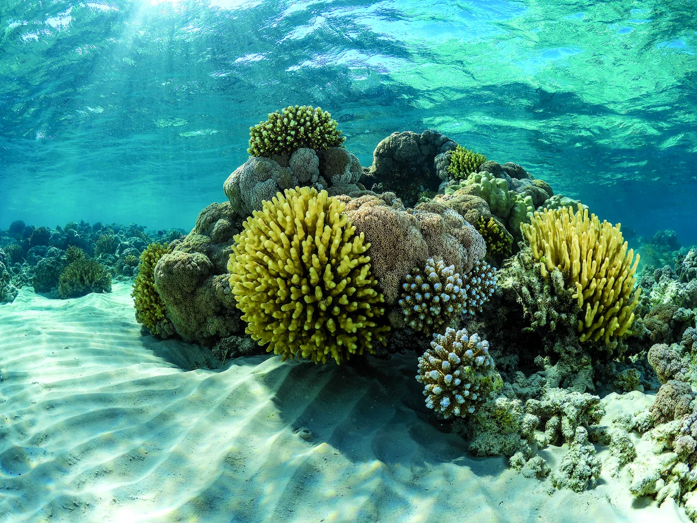
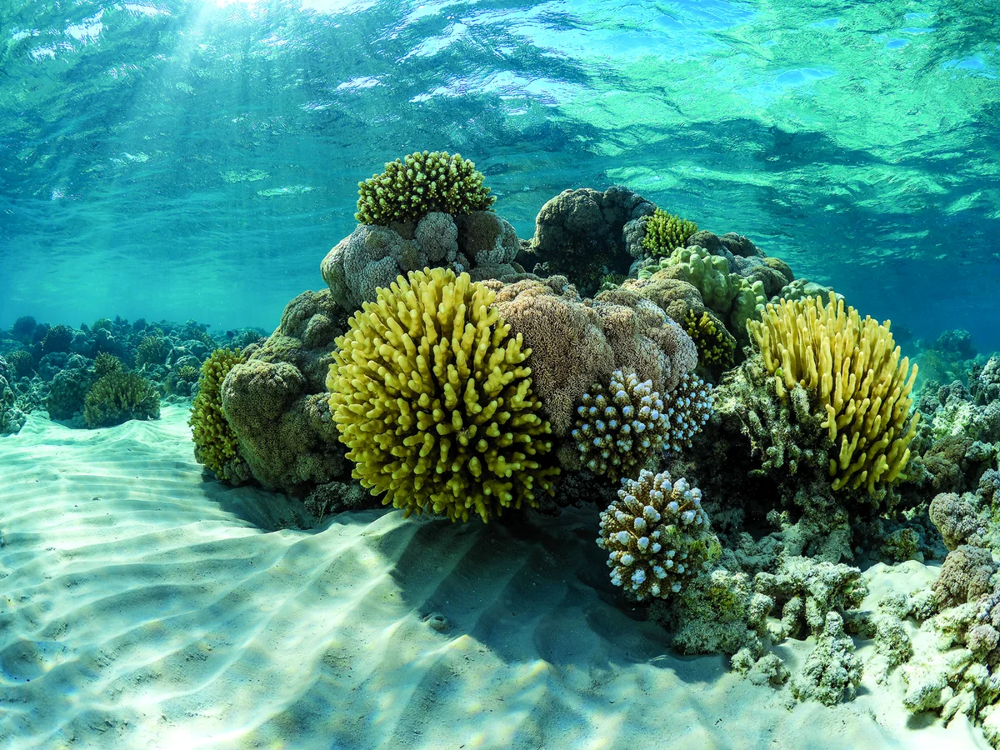

Coral reefs are among the most mesmerizing and biologically rich ecosystems on our planet. Often called the "rainforests of the sea," they support an incredible diversity of life and provide essential services to both marine organisms and humans. Coral reefs cover less than 1% of the ocean floor, yet they are home to about 25% of all marine species, including thousands of types of fish, mollusks, worms, crustaceans, and sponges. These vibrant underwater cities are vital for the health of our oceans, and their intricate structures, built over millennia by tiny coral polyps, create habitats that sustain a plethora of marine life. The significance of coral reefs extends far beyond their biodiversity. They play a crucial role in protecting coastal areas from the devastating effects of storm surges, hurricanes, and erosion. The complex structures of coral reefs act as natural barriers, absorbing wave energy and safeguarding shorelines, which helps protect coastal communities and infrastructures. This natural defense is becoming increasingly important as climate change leads to more frequent and severe weather events.Economically, coral reefs are invaluable. They are the foundation of vibrant tourism industries in many tropical regions, attracting millions of visitors each year who come to marvel at their beauty and engage in activities such as snorkeling and scuba diving. This tourism generates billions of dollars annually, providing livelihoods for countless individuals and supporting local economies. Additionally, coral reefs contribute to global food security. They support fisheries that are essential for the diets of millions of people worldwide, particularly in developing countries where fish may be the primary source of protein. Coral reefs are extraordinary marine ecosystems, often referred to as the "rainforests of the sea" due to their incredible biodiversity. These vibrant underwater landscapes support thousands of species, including fish, invertebrates, and algae, and provide essential benefits to humans. Coral reefs protect coastlines from storm surge and erosion, contribute to the economy through tourism and fishing, and even play a role in carbon and nitrogen cycling. Despite their importance, coral reefs are facing unprecedented threats from human activities and environmental changes. Protecting coral reefs is crucial for maintaining the health of our oceans and the well-being of future generations.Coral reefs are among the most diverse and valuable ecosystems on Earth, often referred to as the "rainforests of the sea." They support a vast array of marine life, protect coastlines from erosion, and provide resources for millions of people. However, coral reefs are under threat from various human activities and environmental changes. Protecting these vital ecosystems is essential for preserving marine biodiversity and the health of our oceans.

 

Biodiversity: Coral reefs support approximately 25% of all marine species, including fish, invertebrates, and algae.
Economic Value: Coral reefs contribute to local economies through tourism, fishing, and as sources of new medicines.
Coastal Protection: Reefs act as natural barriers, reducing the impact of waves, storms, and floods on coastal communities.
Climate Regulation: Reefs play a role in carbon and nitrogen cycling, helping to regulate the global climate.
Climate Change: Rising sea temperatures lead to coral bleaching, where corals expel the algae living in their tissues, causing them to turn white and often die.
Pollution: Runoff from land, including pesticides, fertilizers, and sewage, can smother corals and promote the growth of harmful algae.
Overfishing: Unsustainable fishing practices can deplete key species that help maintain the balance of reef ecosystems.
Coastal Development: Construction and land reclamation can lead to habitat destruction and increased sedimentation, which smothers corals
Conservation: Establishing marine protected areas can limit human activities and provide safe havens for coral reefs to recover and thrive.
Education: Raising awareness about the importance of coral reefs
Sustainable Fishing Practices: Implementing regulations and encouraging sustainable fishing can help maintain the ecological balance of reef systems.
Reducing Pollution: Reducing land-based pollution through better waste management, agricultural practices, and sewage treatment can protect coral health.
Climate Action: Addressing climate change by reducing greenhouse gas emissions is crucial for the long-term survival of coral reefs.
Individuals can play a significant role in protecting coral reefs. Making sustainable seafood choices helps reduce the pressure on overfished species and promotes healthier marine ecosystems. Supporting sustainable tourism practices, such as choosing eco-friendly tour operators and respecting marine life while diving or snorkeling, can minimize the impact on reefs. Reducing carbon footprints by using energy-efficient appliances, reducing travel, and supporting renewable energy initiatives can contribute to the fight against climate change
Using reef-safe sunscreens, which do not contain harmful chemicals like oxybenzone and octinoxate, can prevent further damage to coral reefs. Participating in beach cleanups, supporting policies that protect marine environments, and educating others about the importance of coral reefs are also effective ways to contribute. Donating to and volunteering with organizations dedicated to coral reef conservation can provide much-needed resources and support for these crucial efforts.
There are many inspiring examples of successful coral reef conservation efforts around the world. The Great Barrier Reef, despite facing significant challenges, has seen positive effects from efforts to reduce agricultural runoff and improve water quality. The Coral Triangle Initiative, a regional partnership in Southeast Asia, focuses on conserving the Coral Triangle, one of the most diverse marine areas in the world. This initiative has made significant strides in protecting coral reefs and promoting sustainable fishing practices.
In the Florida Keys, restoration projects are successfully restoring damaged reefs using coral nurseries and transplantation techniques. These efforts not only rebuild reef structures but also engage and educate local communities and tourists about the importance of coral reef conservation
Protecting coral reefs is a critical and urgent task that requires a collective effort from individuals, communities, governments, and organizations worldwide. By implementing effective conservation strategies and making conscious choices, we can help ensure the survival of these extraordinary ecosystems. Coral reefs are not just beautiful underwater landscapes; they are vital to the health of our planet and our future. It is our responsibility to protect and preserve them for the benefit of all living creatures